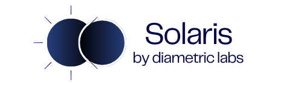

We are conducting a large-scale experiment on AI-assisted personal decision-making.
To facilitate this experiment, we are building Solaris, a multi-platform decision-making agent that operates across various messaging applications globally. Get started with Solaris on TelegramAbout Us
At Diametric Labs, we are revolutionizing decision-making processes through AI-powered collaborative reasoning visualization tools. Our mission is to help people make better decisions.
We are a team of applied AI researchers, data scientists and engineers from top technology companies, hedge funds and well-funded AI startups.